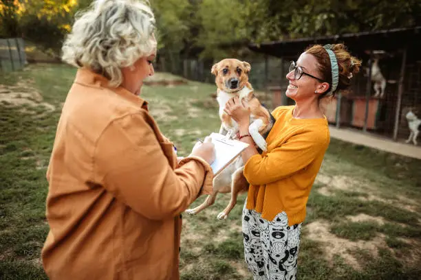

Gönüllüler için aktif görevler
 Bu Hafta Sonu
Bu Hafta Sonu
Düzce Geçici Hayvan Bakımevi

Gönüllü AranıyorMerkez Besleme Noktaları
 Acil Destek
Acil Destek
Tedavi Bekleyen Patiler
PATILINK; sokak hayvanlarının yaşam koşullarını iyileştirmek, gönüllüleri bir araya getirmek ve sahiplendirme süreçlerini desteklemek amacıyla geliştirilmiş sosyal sorumluluk platformudur.
Yakında mobil uygulamamız ile gönüllü ağına katılabilirsiniz.